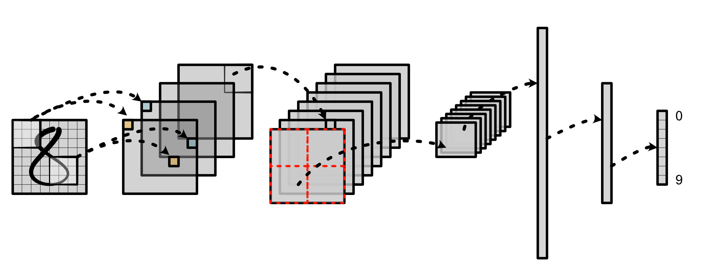
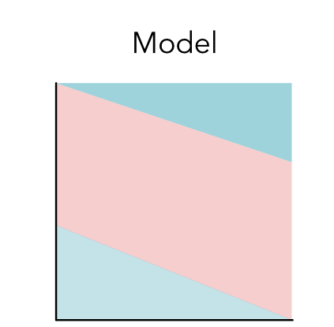
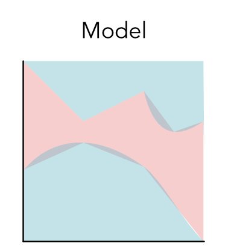

Machine Learning Engineering
Lecture 5
Mini-ML 1
Lecture
Lecture Quiz
Outline
Datasets
Model
Parameters
Datasets
Data Points
Convention \(x\)

Data Points
Convention \(x\)

Data Points
Convention \(x\)

Data Labels
Convention \(y=0\) and \(y=1\)
Training Data
Set of datapoints, each \((x,y)\)

Data Points
Convention \(x\)

Data Points
Convention \(x\)

Data Set

Network
{kind=link}
Data Labels
Convention \(y\)
Model
Models
Functions from data points to labels
Functions \(m(x)\)
Any shaped function is a model
Example Model
Example of a simple model
x = (0.5, 0.2) def model(x): return 0 if x[0] < 0.5 else 1 model(x)
Model 1

Linear Model
Model 2
{kind=link}
Model 3
{kind=link}
Parameters
Parameters
Knobs that control the model
Any information that controls the model shape
Parameters
Example with higher-order functions
def make_model(parameter): def model(x): return 0 if x[0] < parameter else 1 return model model = make_model(0.4) x = (0.5, 0.2) model(x)
Linear Parameters
rotating the linear separator ("slope")

Linear Parameters
changing the separator cutoff ("intercept")

Math
Linear Model
def make_linear_model(w, b):
def model(x):
return 1 if (x[0] * w[0] + x[1] * w[1] + b > 0.0) else 0
return model
linear_model = make_linear_model([0.1, -0.2], 0.0)
linear_model(x)Coding with Parameters
Managing Parameters
Last lecture: Real-world models have many modules
Management challenge, group parameters with code
Module Style
def make_linear_model(w, b):
def model(x):
return 1 if (x[0] * w[0] + x[1] * w[1] + b > 0.0) else 0
return modelvs
class MyLinearModel(Module):
def __init__(self):
self.w = [self.add_parameter("w1"),
self.add_parameter("w2")]
self.b = self.add_parameter("b")
def forward(self, x):
return 1 if (x[0] * self.w[0] + x[1] * self.w[1] + self.b > 0.0) else 0Module Style
linear_model = make_linear_model([0.1, -0.2], 0.0)
linear_model(x)vs
linear_model = MyLinearModel()
parameters = linear_model.named_parameters()
parameters["w1"].update(0.1)
parameters["w2"].update(-0.2)
parameters["b"].update(0.0)
linear_model(x)Trade-offs
Modules are more verbose, but self-documenting
Avoid currying and inner functions
Functional style simpler, closer to math
Playground
Module-1
Module-1 Learning Objectives
Practical understanding of derivatives
Dive into autodifferentiation
Parameters and their usage
Module-1: What is it?
Numerical and symbolic derivatives
Implement our numerical class
Implement autodifferentiation
Module-1: Review
Review differentiation rules
Everything is scalars for now (no "gradients")
Module-1 Overview
5 Tasks
Due Sept 29th.
Task 1.1: Numerical Derivatives

Task 1.2: Scalars

Task 1.3: Chain Rule

Task 1.4: Backpropagation

Task 1.5: Classifier Training